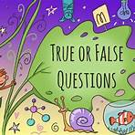

| INTRODUCTION | MATCHING HEADING | TRUE-FALSE-NOTGIVEN & YES-NO-NOTGIVEN | WORDS COMPLETION |
| Skills | Tips | Practice | LOCATION |
|
In this type of question, while identifying writer's views you are required to put the answers by yes, no or not given. It is necessary to note the concept of yes, no and not given.
If the statement is available in the passage that means yes and if statement is opposite means no, and if statement is not available in the test that means not given.  |